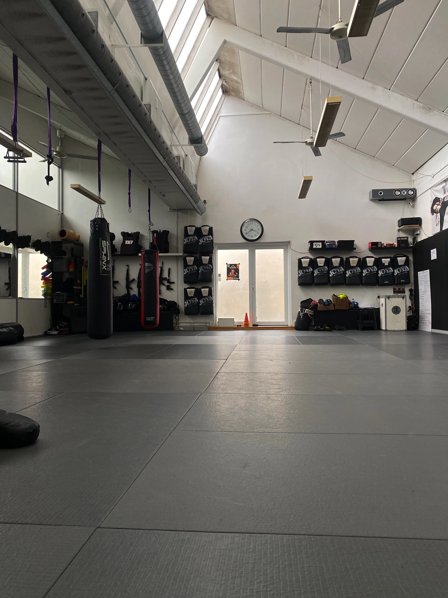

Velkommen til den ultimative guide til valg af boksehandsker! Er du en dedikeret fighter der søger det perfekte udstyr til din træning, eller måske på jagt efter dit første par? Så er du kommet til det rette sted. Har du nogensinde følt dig forvirret over det store udvalg af boksehandsker på markedet? Så frygt ikke længere! Vi er her for at guide dig gennem de mange valgmuligheder, så du kan træffe den bedste beslutning for lige netop dig Uanset erfarings niveau eller brugsformål er det rigtige udstyr en kæmpe hjælp til din træning og udvikling. Vi vil i denne guide give dig alt hvad du har brug for at vide for at vælge de perfekte boksehandsker. Med råd fra garvede udøvere som selv har stået med hænderne i gløderne og ved hvad der virker og hvor man skal være opmærksom. Lad os sammen dykke ind i den jungle det kan være at vælge det rette set boksehandsker så din træning kan nå nye højder! Lad os komme i gang!
”Knockout vanter, den ultimative guide til uddeling af hovedpine”
Boksehandsker er et essentielt værktøj for en hver kampsportsudøver, lige fra bokseren, til muay thai kæmperen
og lige ledes for dem som er udefter en workout som kan booste konditionen og det mentale overskud i form
af en hård omgang træning. Og det er uanset om du er en erfaren kæmper eller lige skal til at have dit første sæt handsker på.
Det rigtige valg af boksehandsker kan gøre en kæmpe forskel for din træning og udvikling,
da de ikke kun beskytter dine hænder og eventuelle træningspartner.
Her er nogle nøglepunkter som du bør overveje, når du vælger boksehandsker.
1. Størrelse og vægt:
Boksehandsker fås i nærmest alle afskygninger,
og det kan virke helt uoverskueligt at vælge rigtigt hvis man ikke ved hvor man skal starte.
Et godt sted at starte ville være størrelse og vægt. (her tales om handsker som ikke skal bruges på boksesækken,
det er en anden historie). Først og fremmest er det vigtigt at vælge nogle boksehandsker som passer din håndstørrelse og træningsbehov.
Generelt anbefales det at man vælger handsker med en vægt på 10-16oz (ounce) til træning og konkurrence.
2. Materiale og polstring:
Kvaliteten af materialet og polstringen i boksehandskerne er alt afgørende
for at beskytte dine hænder og din modstander mod stød. Læderhandsker er oftest at foretrække for deres holdbarhed og komfort,
mens skum- eller gel-polstrede handsker kan give ekstra støddæmpning. Hvis man har i tnakerne at bruge handskerne til sparring
er det selvudnævnt 16oz handske man er på udkig efter. (18oz hvis man vejer over 85 eller slår hårdt). Både for at passe på sine hænder
og af respekt for sin sparringspartner.
3. Lukningssystem:
Boksehandsker kommer med forskellige lukningssystemer,
det kan være velcro, ”snørebånd” eller en elastisk lukning.
Velcrolukning er praktisk og nem at justere, mens en lukning med snøre giver mere stabilitet
ved den rette håndryg og en mere tilpasset pasform.
4. Anvendelses formål:
Overvej hvilket formål du primært vil bruge boksehandskerne til.
Er det til sparring, på sækken eller til træning med pads?
Forskellige aktiviteter kræver forskellige typer handsker.
Man anbefaler også ikke at bruge handsker til sparring på sækken, da man hurtigt får slået polstringen flad ved brug på sæk.
5. Budget:
Prisen på boksehandsker kan variere meget alt afhængigt af hvilken kvalitet og mærke man er på udkig efter.
Sæt en pris og find handsker som kan opfylde lige netop det behov du har, indenfor det prisområde.
Ved at tage det overnævnte punkter med i dine overvejelser når du vælger boksehandsker,
burde du være godt klædt på til at finde det perfekte par til dig og dine behov. God fornøjelse
